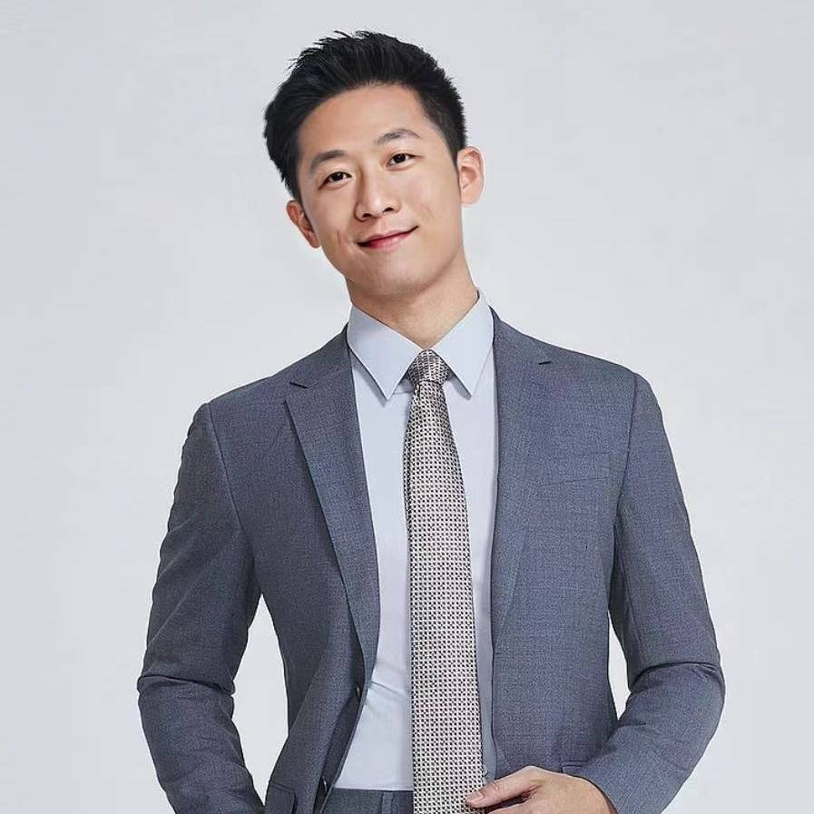

Need Identification

Team Member / IP and Technology Commercialization Advisor
Huang Yuhang
Huang Yuhang is an IP and technology commercialization advisor at Ma Su Team. A veteran with years of experience in intellectual property services, he focuses on supporting military units, tertiary hospitals, universities, and research institutions with IP technical services, patent mining, portfolio planning, and commercialization solutions.
He has full-chain service capabilities covering frontline need identification, technical improvement, patentable solution extraction, and implementation support. With the discipline, execution capability, and scenario awareness shaped by his military background, Huang is especially skilled at transforming practical pain points into patentable, protectable, and commercially valuable technical solutions.
阅读中文介绍VeteranMilitary background and field awareness.
Patent miningFrom needs to patentable solutions.
CommercializationResearch-result transfer planning.
Field scenariosMilitary, clinical, and university service.
Professional Positioning
Turning frontline needs into patentable, protectable, and implementable technical results.
Huang's value lies in connecting real use scenarios with intellectual property protection. Starting from pain points in military training, clinical procedures, university research, and equipment use, he identifies technical problems that can be improved and then translates them into patentable solutions, portfolio directions, and commercialization routes.
Patent Mining
From improvement ideas to patent solutions
He is skilled at breaking down changes in tools, equipment, medical devices, teaching and research apparatus, and ergonomic improvements into technical features, effects, and claim directions.Commercialization
Moving research results toward application
He helps research teams express value, clarify scenarios, identify transfer targets, and package laboratory results into projects that are easier to protect, present, promote, and implement.Service Fields
Military research, clinical medicine, and university research
His service experience covers military research, tertiary hospitals, and universities, with practical work in equipment improvement, surgical instrument optimization, and ergonomic enhancement.Service Focus
Core Service Areas
- Patent mining and portfolio planning: Identifies patentable solutions around frontline needs, technical improvements, and research results, then clarifies technical features, use scenarios, and layout priorities.
- Technical improvement: Supports clearer improvement paths across efficiency, structure, usability, safety, and reliability.
- Commercialization planning: Helps research teams convert laboratory results, clinical experience, equipment improvements, and teaching or research outputs into project plans that can be presented, protected, and connected with industry resources.
- Key application fields: Covers military research, clinical medicine, university research and teaching, tool and equipment improvement, surgical instrument optimization, and ergonomic enhancement.
Frontline Innovation
Why frontline needs are fertile ground for patent mining.
Valuable patents often come from real problems in specific scenarios: whether training equipment can be made more portable, surgical instruments easier to operate, research apparatus more stable, or workflows safer. Huang starts from these details and helps transform practical improvements into protectable innovation.
Commercialization
Helping results move beyond papers and prototypes.
Technology commercialization requires more than filing patents. It also requires application-scenario expression, value presentation, rights-boundary design, and industry-connection logic. Huang helps researchers and technical teams explain, protect, and move improvements from laboratories, training fields, and clinical settings into broader real-world use.
Core Strengths
Core Professional Strengths
- Combines a veteran background with IP service experience, bringing strong understanding of field scenarios, practical pain points, and technical improvement needs.
- Provides full-chain support from need identification and technical improvement to patent mining, portfolio recommendations, and commercialization planning.
- Understands innovation scenarios in military research, clinical medicine, and university research, helping researchers identify patentable outcomes.
- Practical experience in tool and equipment improvement, medical surgical instrument optimization, and ergonomic enhancement.
- Helps teams turn useful improvements into valuable IP assets that strengthen protection, presentation, and commercialization potential.